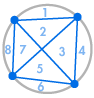
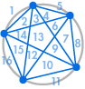

Introduction
Imagine that we place several points on the circumference of a circle and connect every point with each other. This divides the circle into many different regions, and we can count the number of regions in each case. The diagrams below show how many regions there are for several different numbers of points on the circumference. We have to make sure that only two lines meet at every intersection inside the circle, not three or more.
 |  |  |  |  |
| 1 region | 2 regions | 4 regions | 8 regions | 16 regions |
We can immediately see a pattern: the number of regions is always twice the previous one, so that we get the sequence 1, 2, 4, 8, 16, … This means that with 6 points on the circumference there would be 32 regions, and with 7 points there would be 64 regions.
We might decide that we are happy with this result. The number of regions is always twice the previous one – after all this worked for the first five cases. Or we might decide that we should check a few more, just to be safe:
 |  |
| 31 regions, not 32 | 57 regions, not 64 |
Unfortunately something went wrong: 31 might look like a counting mistake, but 57 is much less than 64. The sequence continues 99, 163, 256, …, very different from what we would get when doubling the previous number.
This example illustrates why, in mathematics, you can’t just say that an observation is always true just because it works in a few cases you have tested. Instead you have to come up with a rigorous logical argument that leads from results you already know, to something new which you want to show to be true. Such an argument is called a proof.
Proofs are what make mathematics different from all other sciences, because once we have proven something we are absolutely certain that it is and will always be true. It is not just a theory that fits our observations and may be replaced by a better theory in the future.
In the above example, we could count the number of intersections in the inside of the circle. Thinking carefully about the relationship between the number of intersections, lines and regions will eventually lead us to a different equation for the number of regions when there are x = V.Axi points on the circle:
Number of regions = x4 – 6 x3 + 23 x2 – 18 x + 2424 = (Math.pow(V.Axi,4) - 6*Math.pow(V.Axi,3) + 23*Math.pow(V.Axi,2) - 18*V.Axi + 24)/24.
This equation works in all the cases above. We could now try to prove it for every value of x using “induction”, a technique explained below.
Traditionally, the end of a proof is indicated using a ■ or □, or by writing QED or “quod erat demonstrandum”, which is Latin for “what had to be shown”.
A result or observation that we think is true is called a Hypothesis or Conjecture. Once we have proven it, we call it a Theorem. Once we have proven a theorem, we can use it to prove other, more complicated results – thus building up a growing network of mathematical theorems.
Axioms
Raphael’s School of Athens: the ancient Greek mathematicians were the first to approach mathematics using a logical and axiomatic framework.
One interesting question is where to start from. How do you prove the first theorem, if you don’t know anything yet? Unfortunately you can’t prove something using nothing. You need at least a few building blocks to start with, and these are called Axioms.
Mathematicians assume that axioms are true without being able to prove them. However this is not as problematic as it may seem, because axioms are either definitions or clearly obvious, and there are only very few axioms. For example, an axiom could be that a + b = b + a for any two numbers a and b.
Axioms are important to get right, because all of mathematics rests on them. If there are too few axioms, you can prove very little and mathematics would not be very interesting. If there are too many axioms, you can prove almost anything, and mathematics would also not be interesting. You also can’t have axioms contradicting each other.
Mathematics is not about choosing the right set of axioms, but about developing a framework from these starting points. If you start with different axioms, you will get a different kind of mathematics, but the logical arguments will be the same. Every area of mathematics has its own set of basic axioms.
When mathematicians have proven a theorem, they publish it for other mathematicians to check. Sometimes they find a mistake in the logical argument, and sometimes a mistake is not found until many years later. However, in principle, it is always possible to break a proof down into the basic axioms.
Set Theory and the Axiom of Choice

To formulate proofs it is sometimes necessary to go back to the very foundation of the language in which mathematics is written: set theory.
A set is a collection of objects, such a numbers. The elements of a set are usually written in curly brackets. We can find the union of two sets (the set of elements which are in either set) or we can find the intersection of two sets (the set of elements which are in both sets).
Many mathematical problems can be formulated in the language of set theory, and to prove them we need set theory axioms. Over time, mathematicians have used various different collections of axioms, the most widely accepted being nine Zermelo-Fraenkel (ZF) axioms:

AXIOM OF EXTENSION
If two sets have the same elements, then they are equal.
AXIOM OF SEPERATION
We can form a subset of a set, which consists of some elements.

EMPTY SET AXIOM
There is a set with no members, written as {} or ∅.

PAIR-SET AXIOM
Given two objects x and y we can form a set {x, y}.
UNION AXIOM
We can form the union of two or more sets.
POWER SET AXIOM
Given any set, we can form the set of all subsets (the power set).
AXIOM OF INFINITY
There is a set with infinitely many elements.
AXIOM OF FOUNDATION
Sets are built up from simpler sets, meaning that every (non-empty) set has a minimal member.

AXIOM OF REPLACEMENT
If we apply a function to every element in a set, the answer is still a set.
If you think about set theory, most of these axioms will seem completely obvious – and this is what axioms are supposed to be. However there is a tenth axiom which is rather more problematic:
AXIOM OF CHOICE
Given infinitely many non-empty sets, you can choose one element from each of these sets.
On first sight, the Axiom of Choice (AC) looks just as innocent as the others above. However the use of infinity has a number of unexpected consequences. For example, you can use AC to prove that it is possible to cut a sphere into five pieces and reassemble them to make two spheres, each identical to the initial sphere. This is only a theoretical concept – the required cuts are fractal, which means they can’t actually exist in real life, and some of the pieces are “non-measurable” which means that they don’t have a volume defined. But the fact that the Axiom of Choice can be used to construct these impossible cuts is quite concerning.
There is a passionate debate among logicians, whether to accept the axiom of choice or not. Every collection of axioms forms a small “mathematical world”, and different theorems may be true in different worlds. It is really just a question of whether you are happy to live in a world where you can make two spheres from one…
Proof by Induction
Proof by Induction is a technique which can be used to prove that a certain statement is true for all natural numbers 1, 2, 3, … The “statement” is usually an equation or formula which includes a variable n which could be any natural number. Let us denote the statement applied to n by S(n). Here are the four steps of mathematical induction:
- First we prove that S(1) is true, i.e. that the statement S is true for 1.
- Now we assume that S(k) is true, i.e. that the statement S is true for some natural number k.
- Using this assumption, we try to deduce that S(k + 1) is also true. Thus whenever S is true for one number it is also true for the next number.
- Since we know S(1) is true, S(2) must be true. And therefore S(3) must be true. And therefore S(4) must be true. And so on: S must be true for all numbers.

Induction can be compared to falling dominoes: whenever one domino falls, the next one also falls. The first step, proving that S(1) is true, starts the infinite chain reaction.
The first step, because so easy, is often overlooked. In fact it is very important and the entire induction chain depends on it – as some of the following examples will show…
The objective of the Towers of Hanoi game is to move a number of disks from one peg to another one. You are only allowed to move one disk at a time, and you are not allowed to put a larger disk on top of a smaller one. Try to move the tower of disks from the first peg to the last peg, with as few moves as possible:
Number of Disks: Moves: 0
Once we have understood the rules of the game, we can try to find the least number of steps necessary, given any number of disks. Playing with the game above might lead us to observe that, with n disks, you need at least 2n – 1 steps. Let us call this statement S(n).
S(1) is clearly true since, with just one disk, you only need one move, and 21 – 1 = 1.
Now let us assume that S(k) is true, i.e. that you need 2k – 1 steps for k disks. Then if we have k + 1 disks:

In total we need (2k – 1) + 1 + (2k – 1) = 2(k+1) – 1 steps. This means that S(k + 1) is also true.
By mathematical induction, S(n) is true for all values of n, which means that the most efficient way to move n = V.Hanoi disks takes 2n – 1 = Math.pow(2,V.Hanoi)-1 moves. ■
Let us use induction to prove that the sum of the first n natural numbers is n (n + 1)2. We first check the equation for small values of n:
1 = 1 (1 + 1)2.
1 + 2 = 2 (2 + 1)2 = 3.
Next, we assume that the result is true for k, i.e. that 1 + 2 + … + k = k (k + 1)2, where k is some number we don’t specify. Now
1 + 2 + … + k + (k + 1) = k (k + 1)2 + (k + 1) = (k + 1) (k + 2)2 = (k + 1) [(k + 1) + 1]2.
We have just proven that if the equation is true for some k, then it is also true for k + 1. By mathematical induction, the equation is true for all values of n. ■
There is another clever way to prove the equation above, which doesn’t use induction. Allegedly, Carl Friedrich Gauss (1777 – 1855), one of the greatest mathematicians in history, discovered this method in primary school, when his teacher asked him to add up all integers from 1 to 100.
Using induction, we want to prove that all human beings have the same hair colour. Let S(n) be the statement that “any group of n human beings has the same hair colour”.
Clearly S(1) is true: in any group of just one, everybody has the same hair colour.
Now assume S(k), that in any group of k everybody has the same hair colour. If we replace any one in the group with someone else, they still make a total of k and hence have the same hair colour. This works for any initial group of people, meaning that any group of k + 1 also has the same hair colour. Therefore S(k + 1) is true.

By mathematical induction, all human beings have the same hair colour! ■
Clearly something must have gone wrong in the proof above – after all, not everybody has the same hair colour. Can you find the mistake?
Some theorems can’t quite be proved using induction – we have to use a slightly modified version called Strong Induction. Instead of assuming S(k) to prove S(k + 1), we assume all of S(1), S(2), … S(k) to prove S(k + 1). Everything that can be proved using (weak) induction can clearly also be proved using strong induction, but not vice versa.
The Fundamental Theorem of Arithmetic states that every integer greater than 1 is either a prime number, or it can be written as the product of prime numbers in an essentially unique way.
We can prove parts of it using strong induction: let S(n) be the statement that “the integer n is a prime or can be written as the product of prime numbers”. S(1) is an exception, but S(2) is clearly true because 2 is a prime number.
Now let us assume that S(1), S(2), …, S(k) are all true, for some integer k. We know that k + 1 is either a prime number or has factors less than k + 1. By our assumption, we know that these factors can be written as the product of prime numbers. Therefore, unless it is prime, k + 1 can also be written as a product of prime numbers. This means that S(k + 1) is true.
By strong induction, S(n) is true for all numbers n greater than 1. ■
To prove that this prime factorisation is unique (unless you count different orderings of the factors) needs more work, but is not particularly hard.
It turns out that the principle of weak induction and the principle of strong induction are equivalent: each implies the other one. They are also both equivalent to a third theorem, the Well-Ordering Principle: any (non-empty) set of natural numbers has a minimal element, smaller than all the others.
The well-ordering principle is the defining characteristic of the natural numbers. It is one of the basic axioms used to define the natural numbers  = {1, 2, 3, …}. These axioms are called the Peano Axioms, named after the Italian mathematician Guiseppe Peano (1858 – 1932).
= {1, 2, 3, …}. These axioms are called the Peano Axioms, named after the Italian mathematician Guiseppe Peano (1858 – 1932).
Proof by Contradiction
Proof by Contradiction is another important proof technique. If we want to prove a statement S, we assume that S wasn’t true. Using this assumption we try to deduce a false result, such as 0 = 1. If all our steps were correct and the result is false, our initial assumption must have been wrong. Our initial assumption was that S isn’t true, which means that S actually is true.
This technique can be used in many different circumstances, such as proving that √2 is irrational, proving that the real numbers are uncountable, or proving that there are infinitely many prime numbers.
Here is another fun example:
We can use proof by contradiction, together with the well-ordering principle, to prove the all natural numbers are “interesting”.
Suppose that not all natural numbers are interesting, and let S be the set of non-interesting numbers. By the well ordering principle, S has a smallest member x which is the smallest non-interesting number. This curious property clearly makes x a particularly interesting number. This is a contradiction because we assumed that x was non-interesting.
Therefore all numbers are interesting. ■
Gödel and Unprovable Theorems
Kurt Gödel (1906–1978)
In the early 20th century, mathematics started to grow rapidly, with thousands of mathematicians working in countless new areas. David Hilbert (1862 – 1943) set up an extensive program to formalise mathematics and to resolve any inconsistencies in the foundations of mathematics. This included proving all theorems using a set of simple and universal axioms, proving that this set of axioms is consistent, and proving that this set of axioms is complete, i.e. that any mathematical statement can be proved or disproved using the axioms.
Unfortunately, these plans were destroyed by Kurt Gödel in 1931. He proved than in any (sufficiently complex) mathematical system with a certain set of axioms, you can find some statements which can neither be proved nor disproved using those axioms. It is also not possible to prove that a certain set of axioms is consistent, using nothing but the axioms itself.
Gödel’s discovery is based on the fact that a set of axioms can’t be used to say anything about itself, such as whether it is consistent. Problems with self-reference can not only be found in mathematics but also in language. Here is the Liar Paradox:
“This sentence is false.”
The sentence above tries to say something about itself. If it is true then the sentence tells us that it is false. If it is false, then the sentence tells us that it is not false, i.e. that it is true. In effect, the sentence is neither true nor false.
When first published, Gödel’s theorems were deeply troubling to many mathematicians. When setting out to prove an observation, you don’t know whether a proof exists – the result might be true but unprovable. Today we know that incompleteness is a fundamental part of not only logic but also computer science, which relies on machines performing logical operations.
Surprisingly, it is possible to prove that certain statements are unprovable. One example is the Continuum Hypothesis, which is about the size of infinite sets.
Towards the end of his life, Kurt Gödel developed severe mental problems and he died of self-starvation in 1978. His insights into the foundations of logic were the most profound ones since the development of proof by the ancient Greeks.